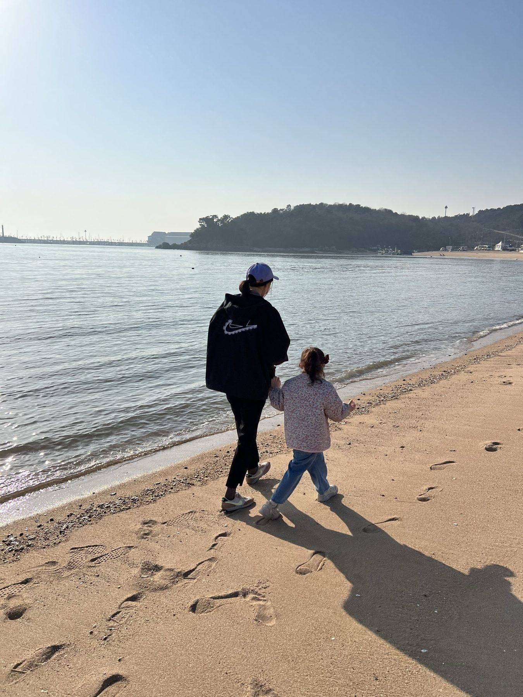
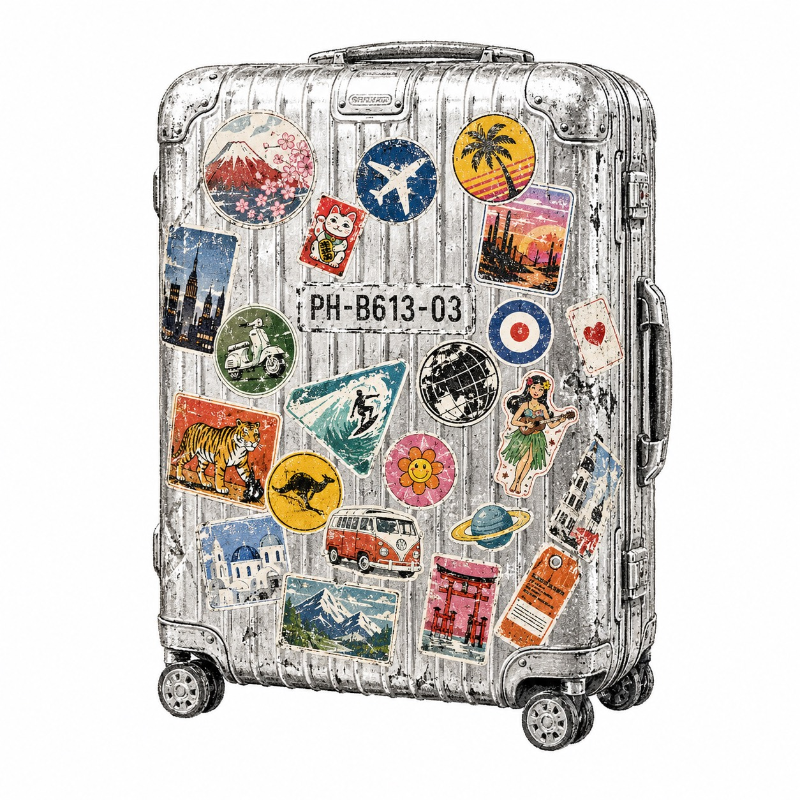
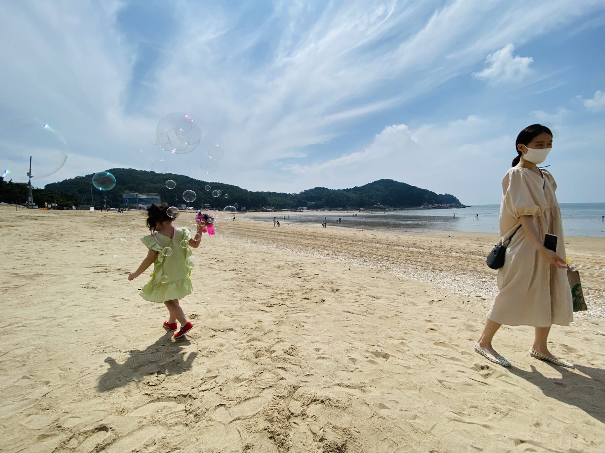
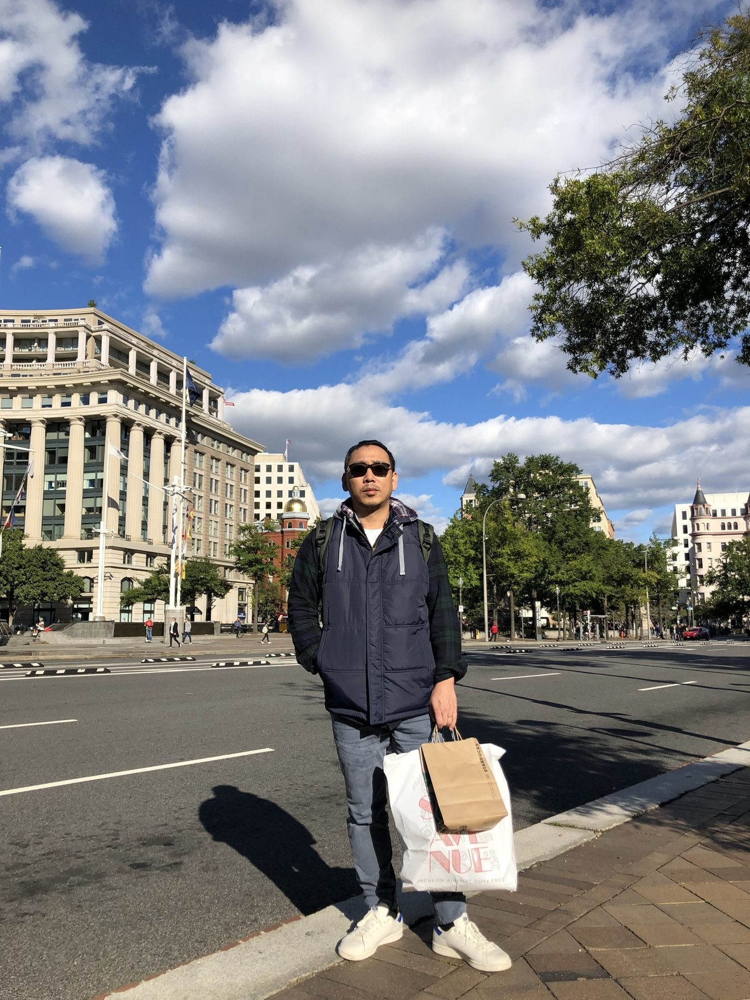
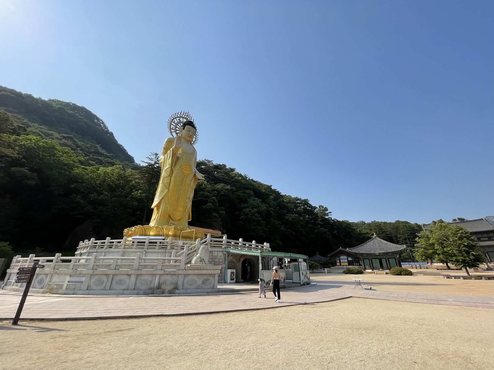
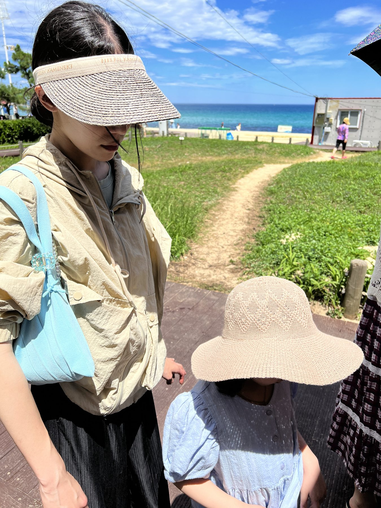
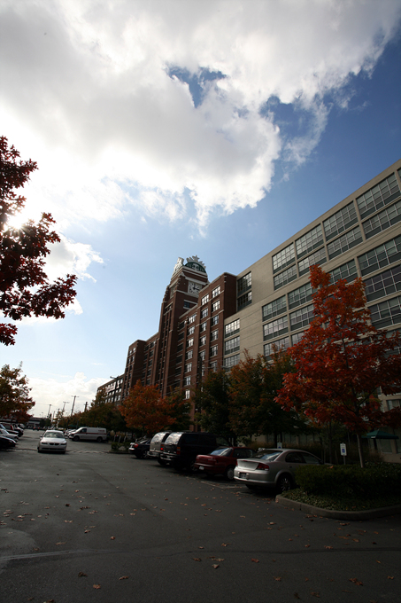

01 · 갈 수 있을 때
다시는 갈 수 없는 길.
아버지와 함께 여행을 왜 더 많이 못했을까. 사랑합니다, 아버지.
LPH-B613-03 여행이 시작되는 시간
서 있는 곳이 바뀌면
보이는 것도 달라진다.

여행별 · LPH-B613-03 · MEMORY LINE
움직여라.
자포자기의 마음이 들면 사람은 자꾸 한곳에 있으려 한다. 그래도 자리를 옮겨라. 다른 것을 보고, 듣고, 경험해라.

서 있는 곳이 바뀌면
보이는 것도 달라진다.
아버지와 함께 여행을 왜 더 많이 못했을까. 사랑합니다, 아버지.

춘천의 강이 보이는 독채 펜션. 차를 세우고 짐을 내려놓은 뒤, 익숙한 자리에서는 보이지 않던 것이 보였다.

서해 바다의 추억. 우리 모두가 마스크를 끼고 살았던 팬데믹 시절에도, 함께 걷는 동안 생각은 다시 움직였다.
부산은 인천과 다르더라. 다른 도시에 서 보았기에, 돌아온 자리도 전과 같지 않았다.
위치를 바꿔라.
시선을 바꿔라.
기억의 노선을 따라왔다면, 이제 문장과 장면을 더 깊이 보거나 이 별이 만들어진 방식을 확인할 수 있습니다.
여행별 · 문장
강이 보이는 하얀 집들이 있다. 집 앞에는 차 두 대의 일부가 걸려 있고, 그 너머로 강과 맞은편 산이 보인다.
햄(함동민)은 이 사진에 짧게 적었다.
춘천의 펜션 강이 보이는 독채
이 메모에는 숙소 이름이나 날짜 대신 강이 보이는 독채가 적혀 있다. 하루에 몇 군데를 돌았는지는 이 기록에 없다. 사진 속 집과 강을 보고 잠시 머물러도 좋겠다.
다른 여행의 메모를 펼치면 말투가 달라진다.
동해바다 너무 더운날은 풍경도 필요 없다 실내로 가자
바다까지 갔는데도 너무 더워 실내로 가자는 말이 나온다. 이 짧은 문장에는 여행 중에 계획을 바꿀 자리도 있다.
부산 사진에는 이렇게 적혀 있다.
부산은 인천과 다르더라 또 가자 부산~
무엇이 달랐는지 길게 설명하지 않아도, 다시 가자는 말은 남았다. 춘천의 집, 더웠던 동해, 다시 가고 싶은 부산은 서로 다른 여행의 기록이다. 하나의 코스로 이을 필요는 없다.
다음 여행을 적을 종이가 있다면 세 줄만 먼저 써 보자.
빈칸을 전부 채우지 않아도 된다. 돌아온 뒤 사진 한 장과 함께 다시 펼쳐 보면, 떠나기 전에 적은 것 중 무엇이 남았는지 볼 수 있다.
사진으로 남긴 장면을 더 고르고 싶다면 카메라별의 두 렌즈 이야기를 읽어보세요.
문장 · 춘천
낯선 자리 · 생각의 방향
낯선 곳에 머물면 생각의 방향도 조금 바뀐다.
차를 세우고, 짐을 내려놓고, 창밖의 물길을 바라보던 시간.
문장 · 서해
팬데믹 · 가족의 시간
바닷가를 걸으면 멈춰 있던 생각도 조금씩 움직인다.
그 시절의 공기와 거리감이 아직 사진 안에 남아 있다.
여행별 · 장면




여행별 · 디자인
새벽역의 푸른 회색은 아버지와 캐리어가 있던 플랫폼에서, 종이표의 아이보리는 떠나기 전 손에 쥔 마음에서 나왔습니다. 곧은 노선 대신 굽은 선을 쓴 이유는 기억이 장소 순서대로 남지 않기 때문입니다.
사진과 문장이 쌓일수록 이 선에는 새로운 정류장이 생깁니다. 디자인은 완성된 장식이 아니라 기억과 함께 자라는 지형입니다.
새벽역기다림과 출발 전의 공기
종이표문장을 천천히 읽는 표면
신호등지금 움직이라는 작은 표시
캐리어함께한 사람과 이동의 물성
NEXT CONSTELLATION
다음 별에서 만나요
읽다가 하고 싶은 일이 떠올랐다면, 햄집사와 이야기해 보세요 ↗
아홉 별로 돌아가기